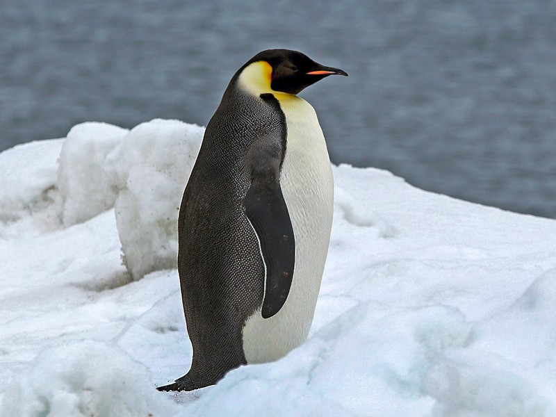

Top 5 Penguin
Emperor Penguin
Emperor Penguin

Fun Facts
- The adult emperor penguins have a white stomach and a black head, head, tail, and wings with yellow/gold marks on the side of their body parts.
- They are 115 CM tall
- They have adaptations to the -60 degree celsius weather such as their several layers of body fat that isnulates their scale like feathers.